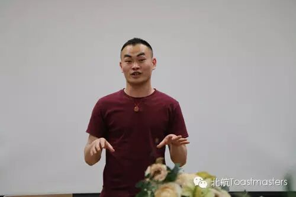
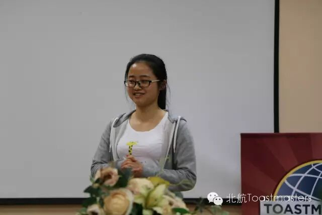
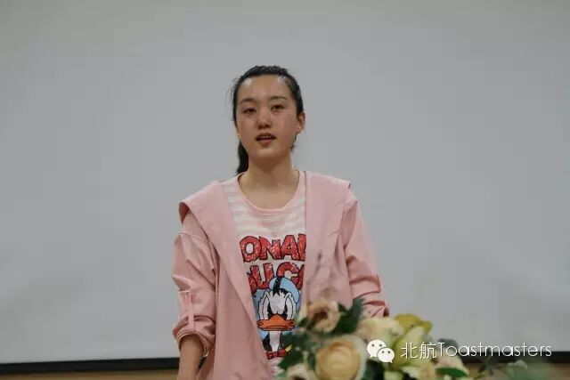
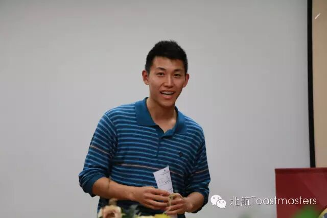

Daniel



Ameco Excellent Club



原文链接（公众号关闭后可能失效）：
https://mp.weixin.qq.com/s/DZyPa0yqOq_vag2op5iExA
https://mp.weixin.qq.com/s/DZyPa0yqOq_vag2op5iExA
第 256/539 篇 · 北航Toastmasters英文演讲俱乐部公众号存档
本页为抢救式本地归档，图文已永久保存。
本页为抢救式本地归档，图文已永久保存。